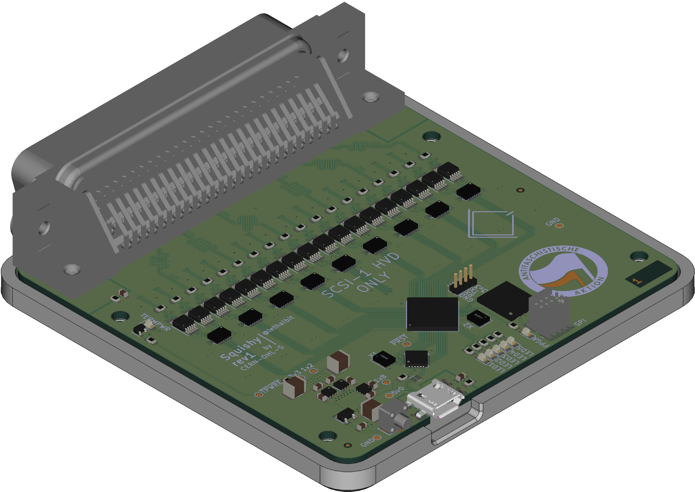

Revision 1
Todo
Flesh this section out
Warning
This hardware revision has errata!
Hardware revision 1 was the first release of the Squishy hardware, it is only capable of speaking SCSI HVD. Revision 1 release 0 has some problems that can be fixed with two component replacements, which was not enough to constitute a whole new release.

Capabilities
Revision 1 is still in the validation phase, as such is capabilities have not been fully cataloged.
Errata
The following errata have been identified for Squishy rev1:
Rev1 Release 0
X1 - The ULPI Osc, needs to be changed from 16MHz to 13MHz
U26 - The FPGA flash, need to be replaces with a GD25Q64EWIGR
Plus everything listed in the Release 1 Errata.
Rev1 Release 1
The SCSI PHY level shifters need to have the trace going to pin 9 cut and then pin 9 bridged to pin 8.
The part designators are U2, U8, U11, U16, U20, U23, U27, U30, and U33.